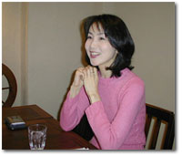
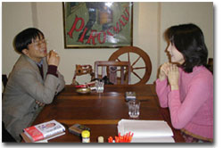
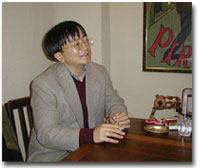

|
■かたや頑丈、かたや軟弱
―――今日は岸本葉子さんの『実用書の食べ方』と、小谷野敦さんの『軟弱者の言い分』を中心に、自由におはなししていただこうと思います。岸本さんは小谷野さんの本に大変共感されたそうですね。
岸本 体力のない人が不当に扱われているというお話は、私もあまり頑強なほうではないので、「そうだ！」と思いました。私は健康なんですけど、頑強ではないんです。
小谷野 岸本さんは精神的に頑丈だと思いますよ。だって、マンションを買っちゃうんだもの。私にはマンションを買うなんて度胸はない。
岸本 死ぬまで家賃を払い続ける度胸がないだけです。
小谷野 私はローンを二十何年も払い続ける度胸がない。
岸本 だけど80歳になってもエッセイのお仕事があるかどうか。それでも家賃を払い続けるのは……。
小谷野 だから80まで生きると思っているところが頑丈なんです。私は長生きできるとは思っていないから。
岸本 ご予定は？
小谷野 58歳ぐらいじゃないかな。
岸本 ……そうですか……。
小谷野 いずれにせよ、私は今日を考えるので精一杯で、明日を考える余力がないんですよ。
岸本 私は考えがどんどん飛んでしまうというか、たとえば本を読んでいて、急に白菜漬けが食べたくなる。そうなると「明日の昼は白菜漬けを食べよう」という思いで頭がいっぱいになってしまって。「スーパーで白菜を買って漬けようか。でもそれじゃあ、食べるのは夜になっちゃう。やっぱりどこかに食べに行こうか」と思っていると、急に、「80歳になっても家賃を払えるかしら」って心配になってくる。だから80歳まで家賃を払い続ける恐怖に負けてマンションを買ったようなもので。

小谷野 私は一括払いならいいんですけどね。5000万円をポンと出して。借金ができない。だいたい、10万円を超える買い物をするときは、震えながら金を払ってますからね。
岸本 小谷野さんが、総理大臣や外務大臣など飛行機で飛び回る人は相当丈夫なんだろうと書いてらっしゃるでしょう？ 私も、あれはきっとシートがベッドになっている特別機で、なかには整体師さんが乗っているに違いないと思っていて。
小谷野 そもそも私は飛行機が嫌いだから。岸本さんは飛行機、大丈夫でしょう？
岸本 私も飛行機は苦手なんです。
小谷野 だから近いアジアにしか行かないんですね。ブータンにも行かれたそうですね。
岸本 あれは怖かったんですよ。飛行機が大きな山脈を越えるんですが、ジェットコースターのように上下するんです。日本のお婆さんのように、「くわばら、くわばら」って祈っていました。
小谷野 アジアでは食べ物がまず問題になるでしょう。
岸本 私は食べ物は平気なんですよ。
小谷野 そこが岸本さんの丈夫なところなんですよ。軟弱者は外国に行ったとき食べ物が問題になる。西洋でもだめですね。アメリカに行っても。
岸本 私はインドに10日いても、いちどもお腹をこわさない。でも、１週間ぐらいしたら、突然、あらゆるスパイスの香りを受けつけなくなって。それまでは「やっぱりインドのカレーはおいしいわ」ってカレーばかり食べていたのに、ある日突然、だめになって。
小谷野 やっぱり岸本さんは頑丈ですよ。痩せてて頑丈。
岸本 頑丈でしかも痩せの大食いなんです。
小谷野 いるんですよね、そういう人。
岸本 でも、瞬発力とか、そういう体力はないんですよ。
小谷野 だいたい男は、パパッと動くのは得意だけど、じっと動かずにいるのは苦手なんです。だから飛行機がハイジャックされたときは、まず男から脱出させるべきだと思うんです。女の人のほうがずっとひとつところにいるのに強いんだから。
岸本 それは生理的に合っているかもしれない。ところで、小谷野さんも書かれていましたが、頑強な人には、「自分もできるんだから、あなたもできるはずだ」っていう論理がありますよね。
小谷野 そうそう。それは義経が鵯越（ひよどりごえ）のとき、「鹿も通れるんだから馬も通れる」と言ったのと同じで。鹿と馬を一緒にするなと。
岸本 「私もできるんだから」という一言は、すべての議論を封じてしまう力がありますから。知力とか財力では、それは絶対に言ってはいけないことでしょう？ お金持ちが「私に10万円払えるんだから、あなたも」と言ったら総すかんですし。ところが体力に関しては言ったもの勝ちというか、強者の論理だけがまかり通っている。
■自意識とのつきあい方のちがい
小谷野 岸本さんはだいたい実用書的な、地に足のついた人なんですよね。いつも愛読していて、そう感じていたんです。
岸本 読んでいただているようで、ありがとうございます。こんどの小谷野さんの本にも、私の名前が出てくるのでびっくりしました。何度も出てくるうちに、「そうか、こう来たか」と思ったり。朝日新聞の「ウォッチ文芸」欄に、何度も私の本を登場させようとしてくれるのに、なかなか期待に添えなくて。それがとうとう監督の大決断でマウンドに上がらせていただいて……もう、頭が下がります。
小谷野 いえいえ。
岸本 私がとても共感したのは、連載が終わって、これでもう新刊を気にしなくてもいいんだという解放感にひたるところ。それと、反動で古いものを猛烈に読みたくなるところ。書評の仕事をしていますと、書店に行ってもつい本の奥付で発行日を確認するようになってしまいますから。
小谷野 私も辛かったですよ。本屋に行ってたくさん買い込んで来ては、「これもだめ、あれもだめだ」ってやっていましたから。書店に行って血眼になって探していました。
―――今回の小谷野さんの本では、行間から「おたく」らしさがにじんでいますね。以前から薄々感じてはいましたが、カミングアウトされたようで。
小谷野 「おたく」の定義が不明だけど、別に恥ずべきことじゃないでしょ。
岸本 マンガのヒロインの話が出てきますね。
小谷野 ああ、『キャンディ、キャンディ』。
岸本 男性のアイドルでは、こんな人が好きとか、こんな人は嫌いだとかっていうのはなかったんですか。
小谷野 林隆三が好きだとか、城みちるはダメだとかっていうのはありました。郷ひろみは歳をとったからいいけど、城みちるは若い姿のまま焼き付いていますからね。
岸本 そういえば先日、新幹線で生の郷ひろみを見ました。色の白さが印象的で、蝋人形のように白かったんです。
小谷野 ええっ、蝋人形！
岸本 つややかに白いんではなくて、生気を失ったように白いんです。造形的には完璧なんですが、鼻梁が通っていて。

―――小谷野さんと岸本さんでは、自意識に対する距離が対照的ですね。過剰な自意識と悪戦苦闘する小谷野さん、自意識皆無に見える岸本さん。
岸本 人によっては、それを「ずるい」という人もいるんです。わざと自意識を消しているんじゃないかと勘ぐられることもあって。自分としてはそんなに過剰ではないと思うんですけど。
小谷野 というよりも、かつてあれだけ怒りを見せていた岸本さんが、それをどう消していったのか。
岸本 人から「こうでしょう」と言われることが気にならなくなってしまったのかな。
小谷野 慣れちゃったということですか。
岸本 人はいろんなことを言うものだから。「こう言われちゃったから、私ってこうなのかしら」とか、「実は私はこうなのかしら」と、まるで自分探しみたいに気にすることはなくなったのかな。
小谷野 うまくシャットアウトするのが身についたんですね。
岸本 小谷野さんこそ、ベストセラーを書かれたから、かなり短期間に身につけられたのではないかと思うんですが。
小谷野 うーん、そうですね。インターネットで自分の名前を検索すると、とんでもないこと書いてるのが出てきたりするから、そういうのは見ないようにする。
岸本 そうですね。私も見ないですね。久保純子さんが「新聞の下３分の１は見ないようにしている」とおっしゃっていて、そういう気持ちの持ち方はわかると思いました。物書きという仕事をしていると、常に人から「こうなんでしょう」と指さされて解析されるようなところがありますけれども、それをいちいち気にしてもしょうがない。
小谷野 呆れるぐらいていねいに分析している人がいますからね。
岸本 ものを書く人は、何かが大きく欠落していたり、逆に突出していたりして、そこをとっかかりにものを書いていったりするのでしょうが、私はごく普通に育ってきて、そうした凹凸がないんです。だから、最初は「こういう仕事は向かないんじゃないかしら」と思ったりして。でも、だんだんと「こういう人なりの収まりはあるんじゃないか」と思うようになって。
小谷野 岸本さんはいつでも一般人に戻れるところにいますよね。
岸本 日本文学の私小説的なものにあるように、自分が経験してきたことを特別なものと思って、そこを介して自我を語るというのはみっともいいもんではないと思っているんですよね。普通のサラリーマンの娘として生まれた女が、人に「私はここで自我を決定されました」と積極的に言えるものもない。「特別なものを背負っています」なんて深刻なことをいうのもちょっと格好悪いかなと。そういう、大げさにいうと美意識みたいなものはありますね。
■結婚とマンション購入、度胸がいるのはどちら？
―――小谷野さんのように、なかば冗談で書いた本が大ヒットしてしまって、逆にそれが小谷野さんの主著であるかのように思われたりすると、仕事がやりにくくなったりしませんか。
小谷野 10万部程度で「大ヒット」とは言わない。別にこれまで仕事がやりやすいと思ったことなどありませんけど。といっても、たんに本を出しても売れない、ということですが。売れたら売れたで、「ああそうか」という程度のものですよ。ただ2か月ぐらいは変でしたけど。
岸本 「もてない」という言葉をめぐって、あちこちでいろいろいわれたりしていましたね。シャレで書いた言葉でも、やっぱり言葉って一人歩きしてしまうものですね。
小谷野 まあ、それはそれで、いいと。ところで岸本さんは、もてると思われているのにもてないそうですが。
岸本 ええ。私のまわり半径１メートルぐらいは真空地帯なんですよ。「誰か決まった人がいるんだろう」とか、「もてて困っているんだろう」などと、冗談半分に言われますけど、私の誕生日の予定は空いていたりしますから。
小谷野 いきなり男にキスされそうになったとき、犬に救われたりとか。
岸本 そうそう。送りオオカミになった人がいて、暗い道に入ったら、急に人が変わって、「わあ、送りオオカミだ」と思ったとたん、路地にいた犬がその怪しからん男に、なんと小便をかけまして。危機を救われました。
小谷野 だからそういう話を読むと、「ああ、近づいてはいけない人なんだな」と思うじゃないですか。
岸本 ああ、そうかもしれない。いちばん虫が付きやすい時期に防虫剤で固めてしまって、その残り香があるのかしら。
―――小谷野さんだったら、岸本さんをどうやって口説くんですか。
小谷野 ……。背が高いですよね。
岸本 167センチあります。小学校6年生で160センチを超えたとき、親には「手に職をつけたほうがいい」と言われました。
小谷野 やはり、自分より背が高いと、かなりきついものがありますね。私は164センチですから。自分より背の高い人は、こちらを相手にしてくれないような気がする。
岸本 ひところ男性は「３高」なんていわれましたけど、女性にとっては「逆３高」なのかしら。それとも、私以外の背の高い女性はみんなもてるのかもしれませんが。
―――小谷野さんは奥さんをどのようにして口説いたんですか。
小谷野 べつに口説いてはいませんよ。うーん。プロポーズしようと思ってたんだけど、むこうが言わせないものだから、メールを送ったんだ。「今日はプロポーズしようと思っていたのに、し損ないました」って。だから、岸本さんもメールを始めると、いろいろあるかもしれませんよ。

岸本 まあ。メールというのがあったか。
小谷野 本の後ろにメールアドレスを書いておいたら、たくさんメールが来ましたね。ただ、女性がラブレターみたいなメールをくれるときは、写真をつけて欲しいな、なんて。
岸本 『もてない男』をお出しになったとき、女性から写真つきのメールは来ましたか？
小谷野 写真つきはないけれども、メールは来ましたね。迫られたことも。最終的には写真を送ってきた人もいます。びっくりするような人から来たこともあります。
岸本 小谷野さんは軟弱者とはいいながら、それでも結婚して共同生活を営む力はおありになる。
小谷野 結婚はもう、火事場のバカ力みたいなものですから。
岸本 小谷野さんにとっての火事場のバカ力が結婚だとすると、私にとってはマンション購入だったのかもしれない。
小谷野 披露宴なんていうのは、もう目をつぶって飛び込むしかないようなもので。「ここさえ切り抜ければ」って自分にいいきかせて。
岸本 ある男性が、「オレは絶対に離婚しない。なぜなら、また結婚式をやるのがいやだから」って言ってました。
小谷野 もう記憶も曖昧です。精神的に尋常ではなかった。私は入籍するだけでいいと思ったんですが、向こうが式を挙げたいというので。岸本さんはもしご結婚するときは、式も披露宴もやりたいと思いますか。
岸本 すこし前までは、そう思っていたんですよ。人は来なくてもいいから、コスプレじゃないけれども、ウエディングドレスを着た姿を自分で見てみたいというのが強烈にあったんですね。でも、コンピュータ髪型診断というのがありまして、これのウェディングバージョンで見てみると、まったく似合わなくて。ウエディングドレスへの憧れも消えました。
小谷野 私はグレーのタキシードかなんか着ましたね。岸本さんもはじめは本のタイトルが『それでもしたい？！結婚』だったのが『結婚しても、しなくても』になって……。
岸本 年齢が上がってくるごとに、「結婚」の二文字が遠ざかっていって。今後はどう変わっていくか、ご期待ください。
―――最後に、互いの本の読みどころをご紹介ください。
岸本 『軟弱者の言い分』というタイトルの通りに、自分はふだん頑丈な人に押し切られているなあとか、エネルギーやパワーでちょっと引け目を感じている人は、ぜったいに共感すると思います。いつもながらのテンポのいい文章なので、ぐいぐい読めてしまうことも保証します。エッセイストとしての小谷野さんの面白さが十二分に出ている本だと思って私は読みました。
小谷野 「いまさらこんなことは人に聞けない」ということが、岸本さんの本を読むとわかる。岸本さんの本自体が、実はとてもすぐれた実用書なのではないかと思います。イオカードとは何かとか、バスにはねられたらどうしたらいいかとかも、岸本さんの本を読むとわかる。東京で生きぬいていくために必要なのが、岸本葉子の全作品なのではないかと思います。
―――ありがとうございました。
小谷野敦（こやの・あつし）
明治大学講師。一九六二年茨城県生まれ。東京大学文学部を卒業後同大学院比較文学比較文化専攻博士過程終了。カナダのブリティッシュ・コロンビア大学に留学。学術博士（超域文化科学）。東西の古典に精通し、圧倒的な知識量に根差した軽妙な語り口（悪口）には定評がある。
著書に『〈男の恋〉の文学史』（朝日選書）、『もてない男』『バカのための読書術』（ちくま新書）、『恋愛の超克』（角川書店）など多数ある。
岸本葉子（きしもと・ようこ）
エッセイスト。一九六一年神奈川県生まれ。東京大学教養学部を卒業後、生命保険会社に就職。一九八六年に退社ののち、中国・北京に留学。その後、旅や生活を題材としたエッセイを雑誌や新聞に発表し、エッセイストとして活躍している。また誠実な書評を書くことでも知られている。
著書に『旅はお肌の曲がり角』『恋もいいけど本も好き』（講談社）、『もうすぐ私も四十歳』（小学館）、『マンション買って部屋づくり』(文藝春秋）など多数ある。
|